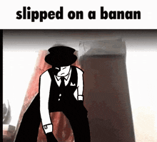

Articulo principal  Die of Death es un juego de terror asimétrico de estilo retro creado por Saucefy10 para parodiar el género actual de juegos de terror asimétricos, inspirándose en Forsaken y otros juegos similares.